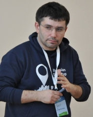
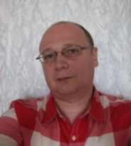
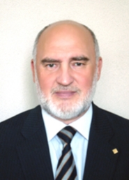

Предлагаем Вам познакомиться с компаниями и экспертами, представляющими образовательный модуль конкурса
 ОЛЕГ БАРАННИК: «Оценка бизнес-модели» Баранник Олег Ефимович, директор по маркетингу системы управления инноваций Startbase (г. Москва), эксперт по бизнес-моделированию. Проводит мастер-классы и экспертные сессии по корректировке и разработке оптимальной бизнес-модели и анализу технической состоятельности проекта. Постоянный член экспертной группы при отборе резидентов в бизнес-инкубатор IT-park в Казани и Набережных Челнах. Член экспертной группы Russian Startup tour 2014. Startbase, система управления инновациями – совместный проект Фонда инфраструктурных и образовательных программ РОСНАНО и компании B2B-center, единой системы электронный торгов. Это уникальный универсальный инструмент, при помощи которого реализуются задачи, связанные с инновационной деятельностью, как для отдельных разработчиков, экспертов, компаний – стартапов, приобретателей инновационной продукции, так и для крупных компаний, Институтов Развития, региональных и федеральных властей. Баранник Олег Ефимович проведет серию мастер-классов для участников краевого конкурса молодежных инновационных команд «КУБ-2014» по вопросам создания и продвижения инновационных проектов, находящихся на ранних стадиях развития.
 АЛЕКСАНДР КОМАРОВ: «Эффективная презентация для инвесторов», «Экономическое проектирование» Александр Комаров является владельцем и управляющим партнером консалтинговой компании «Венова». В этой должности Александр осуществляет поиск, отбор и экспертизу инновационных проектов различных стадий, отвечает за привлечение инвестиций и последующее управление проинвестированными проектами. Александр более 8 лет работает на рынке венчурного капитала, в течение продолжительного принимал участие в управлении активами трех венчурных фондов. С его участием были привлечены инвестиции в 6 проектов. Является бизнес-ангелом, совместно с Фондом посевных инвестиций РВК проинвестировал 2 проекта посевной стадии. Компания «Венова», которую представляет Александр, является венчурным партнером Фонда посевных инвестиций РВК и аккредитованным инвестором Moscow Seed Fund. Александр является экспертом Фонда Сколково, входит в состав Экспертного совета Технопарка «Строгино», осуществляет экспертизу инновационных проектов по запросу со стороны частных инвесторов – бизнес-ангелов. В рамках консалтинговой деятельности Александр осуществляет подготовку проектов под инвестирование, консультирует по вопросам маркетинга и продвижения новых продуктов и услуг, а также по вопросам структурирования сделок и управления проектами. Александр ведет преподавательскую деятельность, он разработал ряд авторских курсов: «Венчурное инвестирование», «Экспертиза инновационных проектов», «Инновационная инфраструктура». Преподает в Российской академии народного хозяйства и государственной службы при Президенте РФ и институте МИРБИС.
 СЕРГЕЙ ВАЛЕНТИНОВИЧ ШЕСТИПЕРСТОВ: «Средовой и промышленный дизайн (предметный дизайн)» Председатель Хабаровского краевого отделения ОО «Союз дизайнеров России». Выпускник кафедры промышленного дизайна Ленинградского высшего художественно-промышленного училища им. В. И. Мухиной. На протяжении восьми лет работал в качестве старшего, ведущего и главного художника-конструктора в научно-исследовательском институте технической эстетики (ДВф ВНИИТЭ). Участвовал в качестве исполнителя и руководителя в научно-исследовательских и художественно-промышленных проектах, выполняемых в рамках отраслевых дизайн-программ для промышленных предприятий Минсудпрома и Минавиапрома Сибири и Дальнего Востока. Имеет несколько десятков свидетельств на промышленный образец. На протяжении нескольких лет работал в качестве председателя государственной квалификационной комиссии на кафедре дизайна в ТОГУ, ХГГУ. Директор ООО «Студия HI-TECH DESIGN». Лауреат национального приза в области дизайна «Российская Виктория», Лауреат Премии Правительства Российской федерации в области культуры, Лауреат Серебряной медали Российской Академии Художеств. Основное направление творческой деятельности – промышленный дизайн, предметный дизайн, дизайн интерьера и мебели, дизайн архитектурной среды, графический дизайн.
DELCAM-URAL: «Виртуальное инженерное проектирование» Delcam - мировой лидер в разработке CAD/CAM продуктов для моделирования, изготовления и контроля сложных изделий и технологической оснастки. Компания была основана в 1977 году в Кембриджском университете. Постоянный рост компании Delcam обусловлен успехом ее программного обеспечения, которое предлагает серию лучших в своем классе решений. На сегодняшний день Delcam plc имеет в числе пользователей свыше 40000 организаций более чем в 90 странах мира.
NATIONAL INSTRUMENTS RUSSIA CORPORATION: «Применение промышленных микропроцессорных систем управления» Более 30 лет National Instruments является лидером в области разработки и производства аппаратно-программных средств автоматизации измерений, диагностики, управления и моделирования в широком спектре приложений. National Instruments является разработчиком технологии виртуальных приборов – революционной концепции, изменившей подходы и методику проведения измерений и разработки систем автоматизации. Штаб-квартира компании National Instruments расположена в г. Остин (Техас, США), число её сотрудников превышает 5000; компания имеет представительства в 41 стране. В течение года компания поставляет свою продукцию более чем в 25 тысяч компаний, расположенных в 90 странах мира. Последние 10 лет журнал FORTUNE называет NI одним из 100 лучших работодателей США. Офис в России был открыт в 2001 году. Заказчиками компании являются инженеры, ученые и технические специалисты, работающие в самом широком спектре отраслей и технологий.